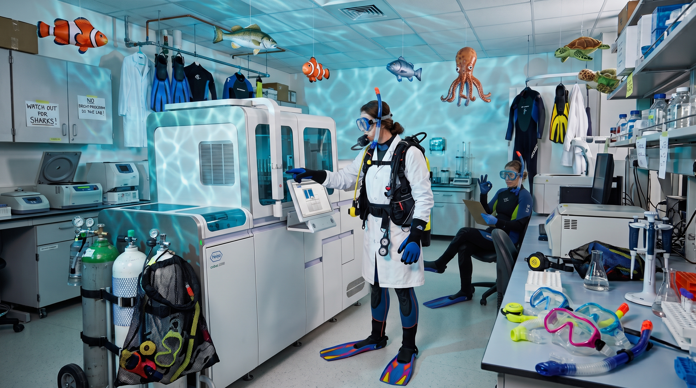

01 / Indonesia · Raja Ampat
“I went looking for the big encounters.
I came home remembering the smallest ones.”
Connecting to account service…
Sign in to discover your planted nudis.

While your PCR assay develops, dream up your next dive adventure. Swap tips on unforgettable sites, then upload the photo that brings your best dive back to life.
“I went looking for the big encounters.
I came home remembering the smallest ones.”

“For a moment, there was nothing to do but look.”

“Same reef. A completely different story.”
Arielle added a field note from Indonesia.
Sample activity · Dive journal
Jamie asks: What made your first night dive memorable?
Sample conversation · Community
Sam is passing on a well-loved camera tray.
Sample listing · Gear exchange
Revisit the essentials, discover a new kind of dive, and find inspiration for your next descent.
More dives. More nudis. Log yours and bring our reef to life.
Select a nudi to discover its garden name and who planted it.
Different oceans. Shared discoveries.
Made with Natural Earth public-domain country boundaries (1:110 million), in an equirectangular projection. Small islands may be omitted at this scale. Markers indicate approximate country locations, not verified dive sites. Sample entries only.
3 sample entries · 3 countries
Arielle's fictional field note about the little encounters that make a dive memorable.
A fictional story about light, stillness, and the things we notice when we slow down.
A fictional return to a familiar reef, seen through a different pair of eyes.
This prototype filters local sample cards only. A connected version would derive destinations from authorized Supabase dive records. It would never expose private community data to signed-out visitors.
A reef you've never heard of. An island you've always dreamed of. Spin the dive wheel and find a little inspiration for your next adventure.
Give the wheel a spin to discover a dive site and its destination.
Travel inspiration, not a suitability recommendation. Check current access, local rules, conditions, conservation restrictions, and required qualifications with a reputable local operator. The wheel is independent of community map entries.
Revisit the essentials, ask better questions, and find your next learning step. A thoughtful companion to your training—not a replacement for it.
This independent concept is not a PADI or SSI course, certification, or endorsement. Practical skills require appropriate training and supervised practice. Content needs instructor review before publication.
Consider your recent experience, comfort, health concerns, and familiarity with the equipment and conditions.
Ask yourself: What has changed since my last dive? What would I like to practise with a professional?
Discuss before booking: Tell the operator about time away, unfamiliar equipment, and any concerns. Seek qualified medical advice when appropriate.
Review the route, conditions, communication, entry and exit, and what to do if the plan changes.
Buddy discussion: Can you both explain the agreed plan and separation procedure?
Instructor prompt: Review the buddy-check sequence taught in your training on the actual equipment you will use. Resolve concerns before entry.
Revisit how weighting, equipment configuration, and controlled movement relate to comfort and reef protection.
Ask your instructor: Should we review my weighting after changing exposure protection or cylinders?
Practise unfamiliar skills with appropriate professional supervision. Keep fins, hands, and camera equipment clear of marine life.
Understand your equipment and agree on a gas plan appropriate to the dive with your buddy and qualified professional.
Discussion prompt: How will you monitor and communicate gas status, and what ends the dive?
A single pressure rule is not appropriate to every dive. Review planning and contingencies within your training.
Be familiar with your own computer's settings, displays, alerts, and manufacturer instructions.
Before travelling: Review the manual and ask a professional about displays or settings you do not understand.
Another diver's computer is not a substitute for monitoring your own dive within your training and limits.
Observe without handling wildlife. Keep your equipment controlled and follow local conservation requirements.
Photo question: Can I take this image without touching the bottom, moving an animal, or blocking its path?
Ask your local guide about site-specific restrictions and responsible observation.
Explore formal enriched-air training. This preview does not teach gas analysis, computer setup, or exposure calculations.
What certification, analysis procedures, and equipment familiarity will this trip require?
Different environments bring different preparation needs. Match the dive to your qualifications and recent experience.
What supervised preparation, exposure protection, communication, and local procedures do I need?
Wreck penetration and cave diving are not extensions of an ordinary open-water dive. They require specific training and preparation.
Do not enter an overhead environment without the appropriate qualifications, equipment, planning, and team procedures.
Discuss your time away, comfort, equipment changes, and planned conditions with a qualified dive professional.
Bring your certification and recent experience details. Ask about a knowledge review and supervised in-water practice appropriate to you.
Look into PADI ReActivate or ask an SSI training center about Scuba Skills Update. Your instructor can help identify an appropriate route.
Reading this hub or completing a quiz is not a skills assessment, refresher certification, or clearance to dive.
Choose a topic: 20 reef-side manners questions, plus six other checks with five questions each. Original awareness questions, not a skills assessment or a PADI/SSI exam. Not instructor-reviewed; results are not saved. Switching topics starts a new attempt.
Ask a question, find your next dive buddy, or give well-loved gear a new chapter. Every name, discussion, reply, and listing below is fictional sample content—not a live post or offer.
Try the forms with fictional details only. New previews appear in this tab until you refresh; nothing is uploaded, published, or saved to your account.
Fictional listings with illustrative artwork. Prices and availability are examples only; no purchases, reservations, or contact details.
€35 · Sam
Tray and handles only. A little cosmetic wear, plenty of future adventures.
Camera, housing, and lights not included. A real listing would show the exact model, dimensions, mounting compatibility, condition, and the seller's own photographs.
This is a fictional offer. There is no seller to contact.
Loan · Jamie
A sample idea for a colleague-to-colleague equipment loan.
A real loan should state the model, manufacturer depth rating, battery and charger requirements, condition, and return arrangements. Check function and suitability before use; don't assume a borrowed torch meets a dive's lighting requirements.
No equipment loan is available through this preview.
Free · Alex
A fictional mesh bag with room for a new set of adventures.
A real listing would include dimensions, clear photographs of the seams and zips, any damage, and collection arrangements. Equipment shown or described here is not an actual member's property.
This sample item cannot be claimed.
For a future live exchange: verify condition, ownership, fit, compatibility, and service history as applicable. Have life-support equipment assessed by an appropriately qualified technician. A community listing is not an endorsement or safety inspection.
Alex · Sample member
Planning a few days in Gozo and hoping to mix diving with slow afternoons. What would you ask a local dive center before choosing the sites?
Jamie: I'd ask how they choose sheltered alternatives when the wind changes, and how demanding the shore entries and exits are.
Arielle: Tell them your recent experience and comfort level too. I'd leave the final site choices flexible rather than book around a single must-do spot.
Sam · Sample member
Thinking about a supervised refresher and an easy local dive afterward. Anyone interested in making a relaxed weekend of it? Dates and location are just examples.
Alex: I'd be interested in discussing it! Let's compare our training and recent experience, then ask a local center what preparation and conditions would suit us both.
Arielle · Sample member
I'm curious about keeping photography simple. What habits helped you stay aware of your buddy and the reef while taking pictures?
Sam: Getting comfortable with buoyancy before adding the camera made the biggest difference. Some dives I leave it behind and just enjoy the view.
Jamie: Agree expectations with your buddy first, keep checking in, and let the shot go if it would require touching habitat or following an animal.
Jamie · Sample member
For me it was noticing how different a familiar reef felt after sunset. What stayed with you?
Alex: The quiet little details in the torch beam. Having a thorough briefing and an experienced local professional made it easier to appreciate them.